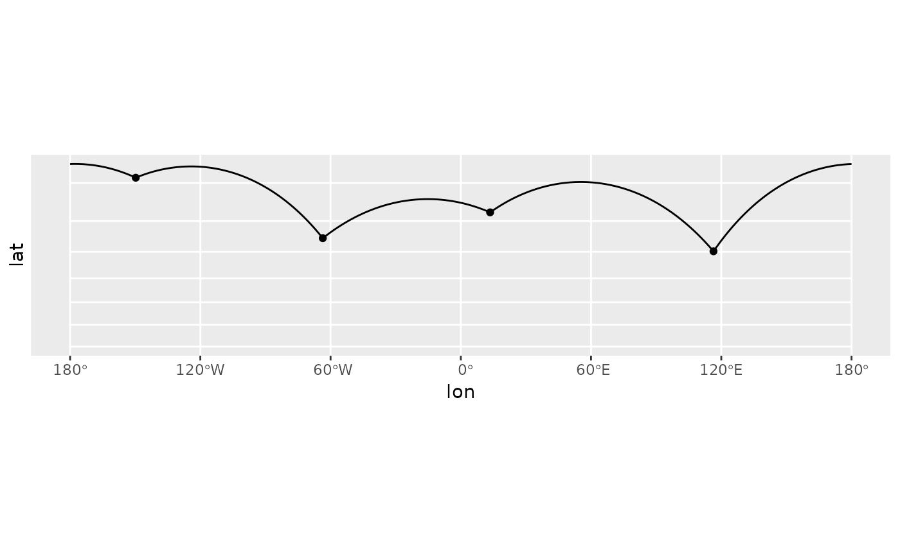

While the implementation is slightly differrent, this function is
intended to behave identically to ggplot2::geom_segment(). Use
great_circle = FALSE and detail = NULL if you wish ignore the fact
that the earth is round.
geom_spatial_segment(
mapping = NULL,
data = NULL,
...,
crs = NULL,
detail = waiver(),
great_circle = TRUE,
wrap_dateline = TRUE,
arrow = NULL,
lineend = "butt",
linejoin = "round",
na.rm = FALSE,
show.legend = NA,
inherit.aes = TRUE
)
StatSpatialSegmentFormat
An object of class StatSpatialSegment (inherits from StatSpatialRect, Stat, ggproto, gg) of length 3.
Arguments
- mapping
An aesthetic mapping created with
ggplot2::aes().- data
A data frame or other object, coerced to a data.frame by
ggplot2::fortify().- ...
Passed to the combined stat/geom as parameters or fixed aesthetics.
- crs
The crs of the x and y aesthetics, or NULL to use default lon/lat crs (with a message).
- detail
Passed to
sf::st_segmentize(): the number of line segments per quadrant of the bounding box. Increase this number for a smoother projected bounding box.- great_circle
If
TRUE, uselwgeom::st_geod_segmentize()to connect the (x, y) and (xend, yend) with the shortest possible great circle along the earth.- wrap_dateline
When using
great_circle = TRUE, usingwrap_dateline = TRUEsplits the great circle along the dateline. You may want to passFALSEhere if usingarrowand a projection that wraps the dateline.- arrow
An arrow specification as a call to
grid::arrow().- lineend
- linejoin
How corners should be joined
- na.rm
Should missing aesthetic values be removed?
- show.legend, inherit.aes
See
ggplot2::layer().
Examples
library(ggplot2)
# visualize flights from
# Halifax -> Anchorage -> Berlin -> Halifax
cities <- data.frame(
lon = c(-63.58595, 116.41214, 13.50, -149.75),
lat = c(44.64862, 40.19063, 52.51, 61.20),
city = c("Halifax", "Beijing", "Berlin", "Anchorage"),
city_to = c("Anchorage", "Beijing", "Berlin", "Halifax")
)
cities$lon_end <- cities$lon[c(4, 3, 1, 2)]
cities$lat_end <- cities$lat[c(4, 3, 1, 2)]
p <- ggplot(cities, aes(lon, lat, xend = lon_end, yend = lat_end)) +
geom_spatial_point(crs = 4326)
# by default, geom_spatial_segment() connects points
# using the shortest distance along the face of the earth
# wrapping at the date line
p +
geom_spatial_segment(crs = 4326) +
coord_sf(crs = 3857)
#> Linking to GEOS 3.10.2, GDAL 3.4.1, PROJ 8.2.1; sf_use_s2() is TRUE

# to let the projection handle the dateline,
# use `wrap_dateline = FALSE` (most useful for
# when using `arrow`)
p +
geom_spatial_segment(
wrap_dateline = FALSE,
arrow = grid::arrow(),
crs = 4326
) +
coord_sf(crs = 3995)
 # to ignore the roundness of the earth, use
# `great_circle = FALSE`
p +
geom_spatial_segment(
great_circle = FALSE,
arrow = grid::arrow(),
crs = 4326
) +
coord_sf(crs = 3995)
# to ignore the roundness of the earth, use
# `great_circle = FALSE`
p +
geom_spatial_segment(
great_circle = FALSE,
arrow = grid::arrow(),
crs = 4326
) +
coord_sf(crs = 3995)